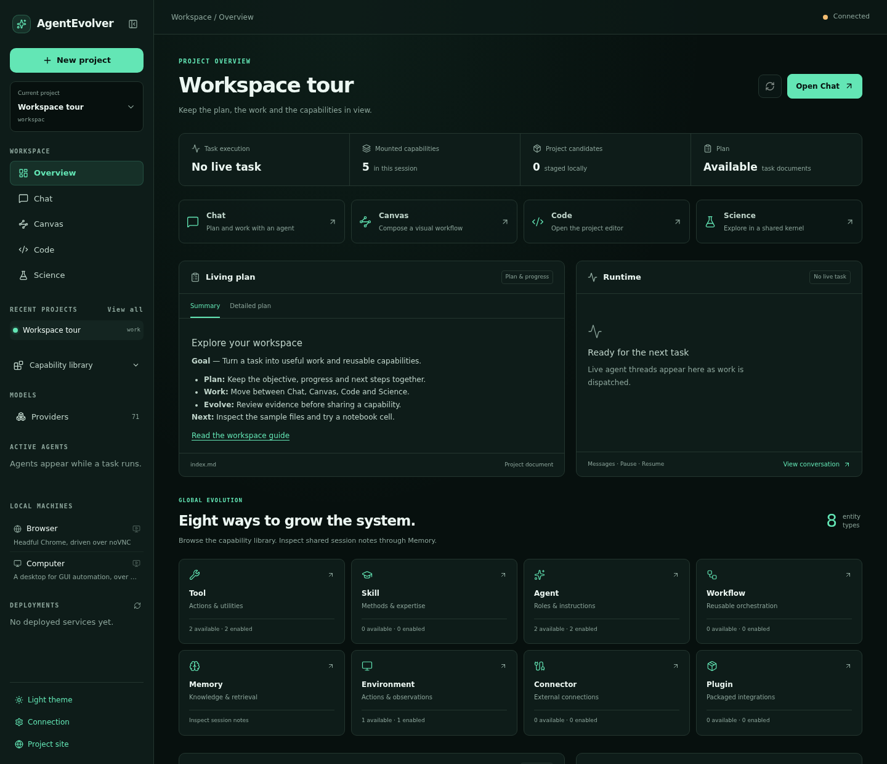

TOOL
Build or refine a callable action with a clear input and output.
A POSSIBLE IMPROVEMENT
A repeated data-cleaning operation becomes a reusable tool.
Explore the module →GLOBAL EVOLUTION · OPEN AGENT PLATFORM
Plan, execute and inspect complex work in one platform. Turn discoveries from real tasks into reusable improvements across eight kinds of agent capability.
Python · Single & multi-agent · Open source / MIT
One lifecycle. Eight entity types.
01 / GLOBAL EVOLUTION
Choose what needs to change around the task: an action, a method, a specialist, a workflow, or the way the agent connects, observes and remembers.
TOOL
A POSSIBLE IMPROVEMENT
A repeated data-cleaning operation becomes a reusable tool.
Explore the module →SKILL
A POSSIBLE IMPROVEMENT
A working diagnosis becomes a guide for the next investigation.
Explore the module →AGENT
A POSSIBLE IMPROVEMENT
Refine a reviewer’s checks and the capabilities it can use.
Explore the module →WORKFLOW
A POSSIBLE IMPROVEMENT
Compose retrieval, parallel analysis and verification into one process.
Explore the module →MEMORY
ENVIRONMENT
CONNECTOR
A POSSIBLE IMPROVEMENT
Adapt an API response into a useful, consistent interface.
Explore the module →PLUGIN
Each task chooses its own scope. An improvement can involve one entity or several; prompts belong to Agent.
02 / BUILT FOR COMPLEX WORK
Runtime coordinates execution. Plan preserves direction. Context carries the information needed for the next decision.
AGENT RUNTIME
Run focused workers, resident services and event subscribers. Exchange messages, coordinate shared resources, and pause or resume at defined execution boundaries.
Inside the Runtime →LIVING PLAN
Maintain the goal, progress, blockers and evidence in a living plan. Its latest summary returns to the agent’s context, including after conversation compaction.
Automatic planning, with an optional approval gate.
CONTEXT & MEMORY
Separate stable instructions, compacted history, recent turns and live state. Read memory details on demand and retain source records for inspection.
fixedInstructions & taskcheckpointCompacted historyrecentRecent interactionslivePlan, observations & budget03 / EVIDENCE-BACKED EVOLUTION
Follow a candidate from its motivation to its evaluation and later use. Versions and real call references make the decision inspectable.
Identify a need; record a baseline.
Create or refine a versioned component.
Compare outcomes with real calls.
Keep, roll back or unload.
Record the outcome in subsequent work.
Evaluation records link a judgment to a version and executed calls. Tasks that require verified improvement also check subsequent use.
A registered candidate is not yet proof of better results.
04 / SHARED WORKSPACE
Inspect the plan, follow execution, open the files and take the next step yourself. Chat, Canvas, Code and Science share project resources.

Current workbench · A sample workspace, with no experiment running.
Science and JupyterLab use the same project kernel as the agent’s code interpreter.
Read task activity, tool results and candidate details alongside project files.
Preview supported web and game deployments, with retained source versions.
05 / PUT IT TO WORK
Bring a bounded task and concrete acceptance checks. Domain skills shape the method; the platform supplies the common execution foundation.
WEBSITE
Implement a site, walk through it in a browser, and iterate on real interactions.
Explore →GAME
Build in Godot, inspect rendered scenes and test the experience through engine controls.
Explore →RESEARCH
Explore data with code, inspect outputs and continue the analysis in a shared notebook environment.
Explore →06 / ENGINEERING DETAILS
Explore how work is composed, controlled, recorded and made available for later research.
Code Mode expresses batches, loops and branches in code, returning selected results.
Compose parallel work, branches, loops, verification and checkpoints.
Track usage across parent and child agents, with inherited permission ceilings.
Retain request and action evidence; reconcile uncertain effects before continuing.
Search the mounted catalog and expose relevant capabilities for the next step.
Export execution records with provenance and reward labels for downstream training.
07 / GET STARTED
Install the framework, configure your model provider, then launch a task. The example commands are for your local checkout.
git clone https://github.com/DVampire/AgentEvolver.git
cd AgentEvolver
bash scripts/install.sh
conda activate agentosSet LLM_HUB_API_BASE and LLM_HUB_API_KEY in your local .env for these examples. Other providers are supported through configuration.
python examples/run_meta_agent.py \
--task "Build a useful tool and verify it." \
--cfg-options model_name=llm_hub/gpt-6-astraA configurable orchestrator with specialist agents. Review the selected config and permissions before a long run.
python examples/run_website_evolution_demo.py \
--scenario-dir examples/tasks/website_evolution/commonspace_forum \
--model llm_hub/gpt-6-astraRequires the browser dependencies and deployment setup described in the website demo guide.
python examples/run_game_development_demo.py \
--task-dir examples/tasks/game_development/tidebound_echoes \
--model llm_hub/gpt-6-astraBuild the Godot Docker images first. The default milestone is a vertical slice; --milestone campaign requests the campaign. See the game setup guide.
KEEP EXPLORING
Start with a guide, then follow the module that owns the behavior.
A research and engineering framework for tasks worth iterating on. Start with a bounded experiment and concrete acceptance criteria.